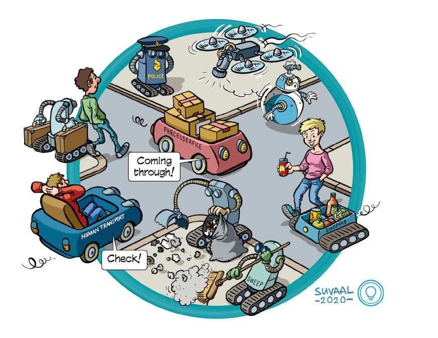

INTERACT: Intuitive Interaction for Robots among Humans Ongoing
This project addresses the interaction of highly automated vehicles with vulnerable road users (VRU) such as pedestrians and cyclists, in the context of future urban mobility. It covers VRU sensing, cooperative localization, behaviour modeling, intent recognition, and vehicle control. Within the AMR group we focus on vehicle control for safe and efficient autonomous driving. See the project website.